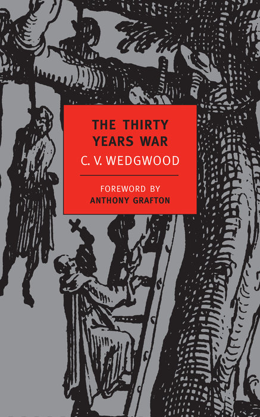
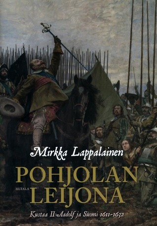

C.V. Wedgwood, Antony Grafton
Europe in 1618 was divided between Protestants and Catholics, and Bourbon and Hapsburg, as well as empires, kingdoms, and countless independent states. After angry Protestants tossed three representatives of the Holy Roman Empire out the window of the royal castle in Prague, world war spread from Bohemia with similar abandon and relentless persistence, destroying European powers from Spain to Sweden as they marched on the contested soil of Germany. Fanatics, speculators, and ordinary people found themselves trapped in a nightmarish world of famine, disease, and seemingly unstoppable destruction. The Thirty Years War was a turning point in the making of modern Europe and the modern world: out of it came the system of nation-states that remains fundamental to international law. C.V. Wedgwood's magisterial book is the only comprehensive account of the war in English, as well as a triumph of scholarship and literature. Includes maps and charts.
Mirkka Lappalainen
Gustavus Adolphus II was the most legendary king of Sweden and Finland, known as the "Lion of the North," whose armies, including the fearsome Hakkapeliitta cavalry, spread terror during the Thirty Years' War. Gustavus Adolphus and his chancellor, Axel Oxenstierna, transformed poor Sweden into an efficient state capable of financing its seemingly endless wars. These reforms were designed for warfare but ultimately became the foundation of the Nordic welfare state and the rule of law. In Finland, too, the era of Gustavus Adolphus II was a turning point. At the beginning of the 17th century, Finland was a chaotic region that had nearly broken away from Sweden during the civil war of the 1590s. Under Gustavus Adolphus, the land of independent and violent strongmen was subdued and harnessed as part of the Swedish empire. Finland's role became one of providing tax revenue and soldiers for Sweden's needs.
The book is only available in Finnish
Brennan C. Pursell
The Winter King provides a compelling study into the causes of the Thirty Years' War. Examining the early stages of the war through the locus of Frederick, it reconciles the forces of confession, conscience and constitutionalism that affected Frederick's decision making at critical junctures throughout the crisis. By placing constitutionalism rather than religion at the centre of events, it offers a subtle yet convincing new account of the conflict." Drawing on political and personal correspondence, backed up with a wealth of archival and secondary sources. Dr. Pursell presents Frederick's choices and alternatives and interprets his words and responses to them. Considering the war from Frederick's perspective he argues convincingly that the war is best understood not simply as a struggle between Protestant and Catholic powers, but rather as an extended constitutional conflict, entwining religious and political factors, fought within the Holy Roman Empire.